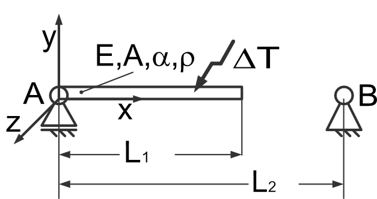
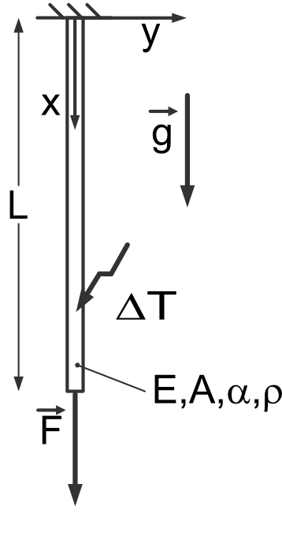

Statics: solving of ODEs II
E5.a - Task
{kind=link}
- given:
\(L_1 = 300mm, L_2 = 301mm, A = 10mm^2, E = 210000MPa, \alpha = 12 \cdot 10^{-6} K^{-1}\)
- wanted:
Necessary heat \(\Delta T\) that the rod can be connected to support B
Stress \(\sigma\) after cool-down
- procedure:
use: \(\frac{du}{dx} = \frac{N(x)}{E\,A} + \alpha \, \Delta T\)
pseudo-code:
Note
Do this task inside a jupyter notebook!
clear variables
import sympy as sp
import ...
# define symbols
..., ..., ... = sp.symbols(...)
# define the deformation equation
... = sp.Eq(..., ...)
# solve the ODE
... = sp.dsolve(..., ...)
# determine the necessary temperature
... = sp.solve(..., ...)
# Calculate the resulting stress
... = sp.dsolve(..., ...)
## determine N(x)
... = sp.solve(..., ...)
sigma = ...
# Interpret your result.
E5.b - Task
{kind=link}
- given:
\(F = 10N, g = 9.81\frac{m}{s^2}, A=4mm^2, L = 10mm, \rho = 7850\frac{kg}{m^3},\) \(\alpha = 12 \cdot 10^{-6} K^{-1}, E = 210000MPa\)
- wanted:
Value of \(\Delta T\) in order to compensate \(F\) and the dead weight of the rod
plot deformation \(u\)
plot stress \(\sigma\)
- procedure:
use: \(\frac{du}{dx} = \frac{N(x)}{E\,A} + \alpha \, \Delta T\)
pseudo-code:
Note
Do this task inside a jupyter notebook!
clear variables
import sympy as sp
import ...
# define symbols
..., ..., ... = sp.symbols(...)
# determine internal force equilibrium
... = sp.Eq(..., ...)
# Definition of the deformation equation
... = sp.Eq(sp.Derivative(..., ...), ...)
# Solution of the ODE with BC
... = sp.dsolve(..., ...)
# Calculate temperature in order to compensate length change of the rod
... = sp.Eq(..., ...)
... = sp.solve(..., ...)
# Get resulting deformation equation
# Get resulting Stress equation
# Plot results
... = sp.lambdify(..., ..., 'numpy')
plt.plot(..., ...)